2002–2006North Rhine-Westphalia
Freelance graphic & web design
Layout grids, typography, and the first taste of building things people actually use. A useful bias ever since.
Researcher in AI & optimization · Bonn, DE
I build co-creative systems — search algorithms and interfaces that help people explore enormous solution spaces and find options they didn't know they wanted.
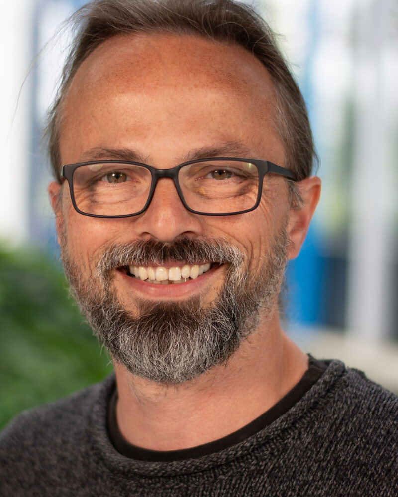
human in the loopMost AI tries to hand you the answer. I'm more interested in the space of possible answers — and in tools that let people wander it, argue with it, and make it their own.
That question has followed me from robot perception and aerodynamic shape optimization to Quality-Diversity search, VR molecular analysis, and climate-adaptive urban planning.
The methods keep changing. The loop stays the same: model, explore, let a human decide.
Researching human–AI interaction for molecular science in the DFG project CytoTransport, co-leading the new Digital Twin 4 Multiphysics laboratory, and teaching evolutionary computation across computer science and engineering.
Recently led OpenSKIZZE as PI — a DBU-funded, interactive urban climate project with the German Weather Service's cold-air model inside the loop. Now building OpenSKIZZE-Praxis (2026–2027): a working QGIS plugin that carries the method into everyday planning practice.
Happiest when a domain expert says: “I hadn't considered that option.”
OpenSKIZZE's climate-adaptive planning, now heading into QGIS; CytoTransport's molecular interfaces; aerodynamic shape search in AErOmAt — every point is a project or a research thread. The axes are deliberately soft: how much a thing lives in algorithms or the physical world, and whether the machine decides alone or with a person.
Hover, tap or focus a pointAxes are a vibe, not a metric
Working prototypes, not case studies. Search a hidden preference landscape, cool a city block, dock a molecule, or make a mirror duet with the machine. Everything runs locally — open a card and start poking.
Four playable prototypes Runs in your browser · no install · keyboard & touch
Design, robotics, optimization, co-creation. Each step kept the previous one's question and changed the medium.
Layout grids, typography, and the first taste of building things people actually use. A useful bias ever since.
Joined an EU robotics project studying how people and robots share work and attention when the stakes are high.
Perception for domestic robots with ROS, C++ and Python. The transparent-object work won a best paper at RoboCup 2016.
Began teaching evolutionary computation and joined AErOmAt, where surrogate-assisted optimization cut the cost of aerodynamic design.
Built an interactive model for co-creative Quality-Diversity search with Gaussian processes and VAEs. Defended in 2021; honourable mention for the ACM SIGEVO dissertation award.
Led FullDA-FM as PI, turning optimization into urban decision support, and co-authored a systematic review of AI in elite sport.
Collaborative molecular analysis in immersive space, including the MolFuSE virtual-screening framework and co-supervised work on force fields and generative GNNs.
Led the DBU-funded OpenSKIZZE project: integrated DWD's KLAM_21 cold-air model and built an interactive, surrogate-assisted tool for climate-adaptive neighbourhood planning.
Studying interaction for conformations, force fields and mutation effects, while co-leading the Digital Twin 4 Multiphysics laboratory.
Taking OpenSKIZZE into planning practice: a working QGIS plugin that brings interactive, climate-adaptive design into the software planners already use.
A broad toolbox, used with a preference for methods that stay honest about uncertainty and interfaces that stay legible to the person using them.
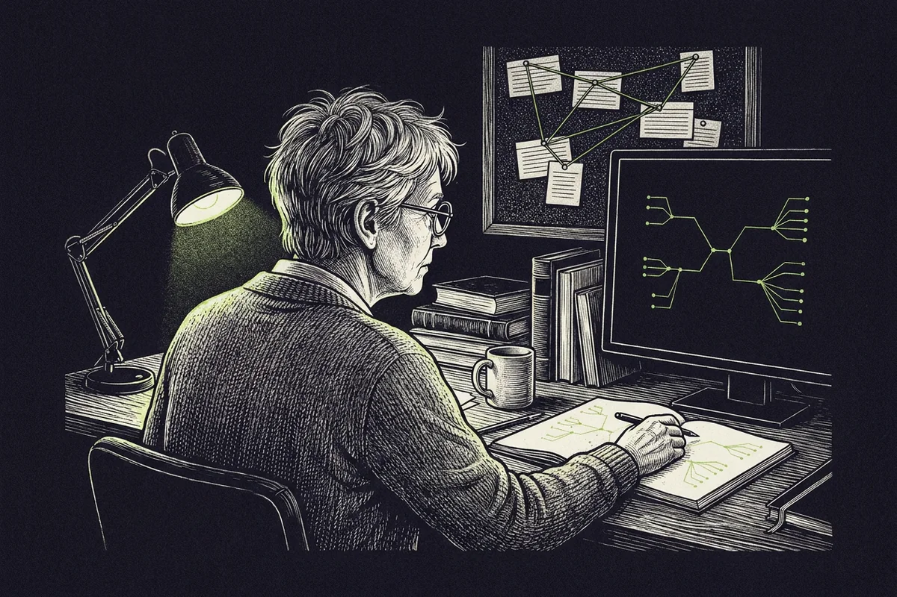
01 / ModelsApplied ML for scientific and spatial problems, where samples are few, simulations are expensive, and “just add data” is not an option.
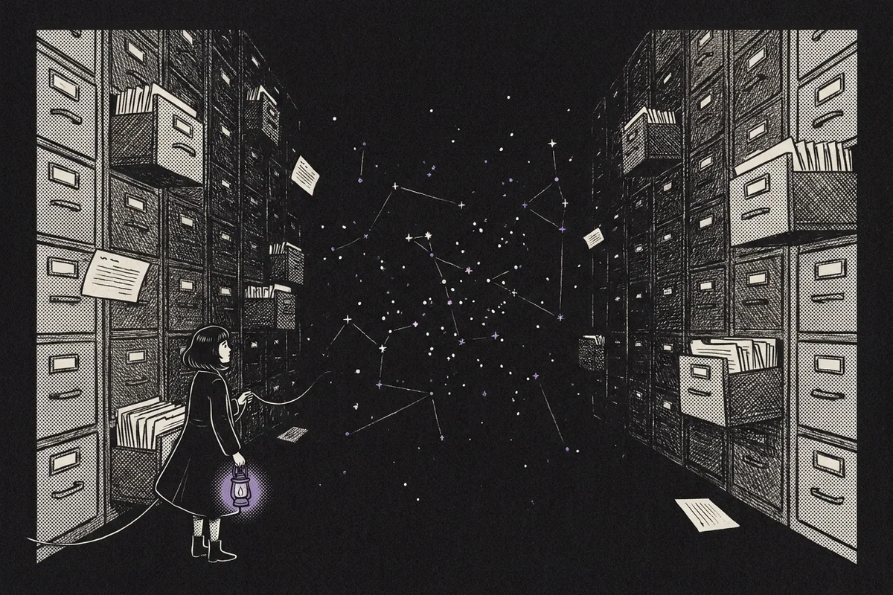
02 / SearchQuality-Diversity and surrogate-assisted optimization for problems with expensive simulators, many trade-offs, and a human choosing the final move.
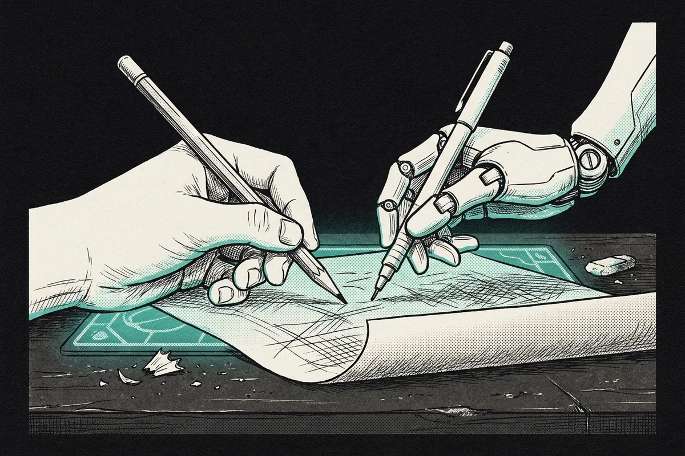
03 / InterfacesCo-creative interfaces, immersive analysis and agentic tooling — built so that domain experts steer the search instead of watching it happen.
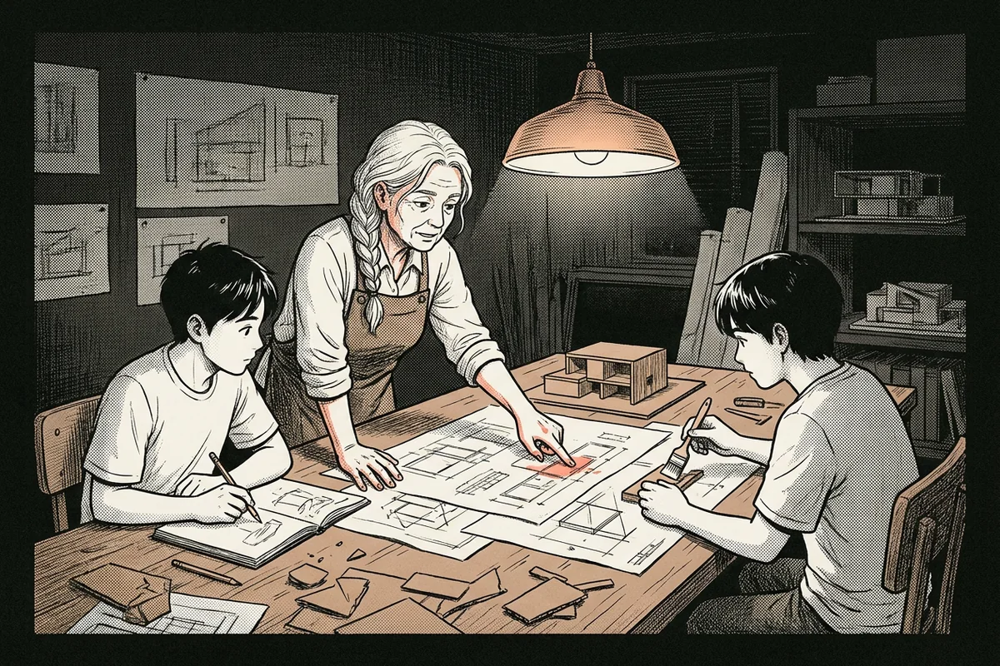
04 / PracticeResearch that runs: Python and C++ systems, robotics middleware, project leadership, grant writing, and a lot of supervised student work.
Co-creation is not only a research topic. It is also how I like to spend a Sunday: with musicians, gardeners, cooks, and sentences that take too long to finish.
I grew up Dutch, live in Bonn, and move between German, English and Dutch without noticing. Most of my best thinking happens away from a screen — on a hiking trail, at a piano, or while something is simmering.
“The interesting moment is when a tool stops feeling like a tool and starts feeling like a collaborator.”
I am also part of Neue Stadtgärtnerei Bonn, a grassroots project for socially and ecologically sustainable housing, urban agriculture and education in the middle of the city.
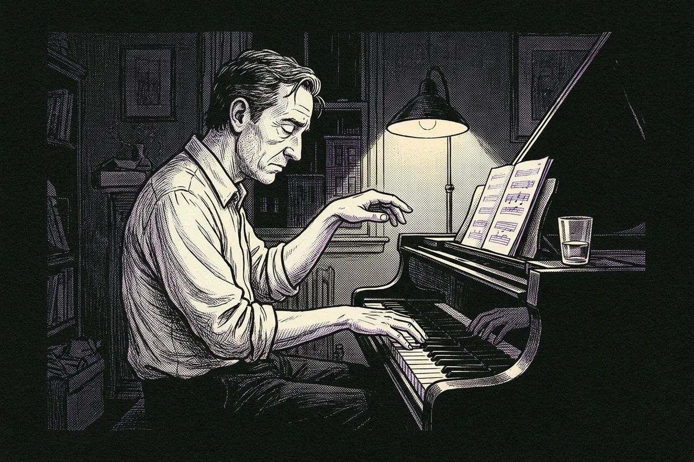
Neoclassical piano and improvisation. The best ideas tend to arrive while playing badly.
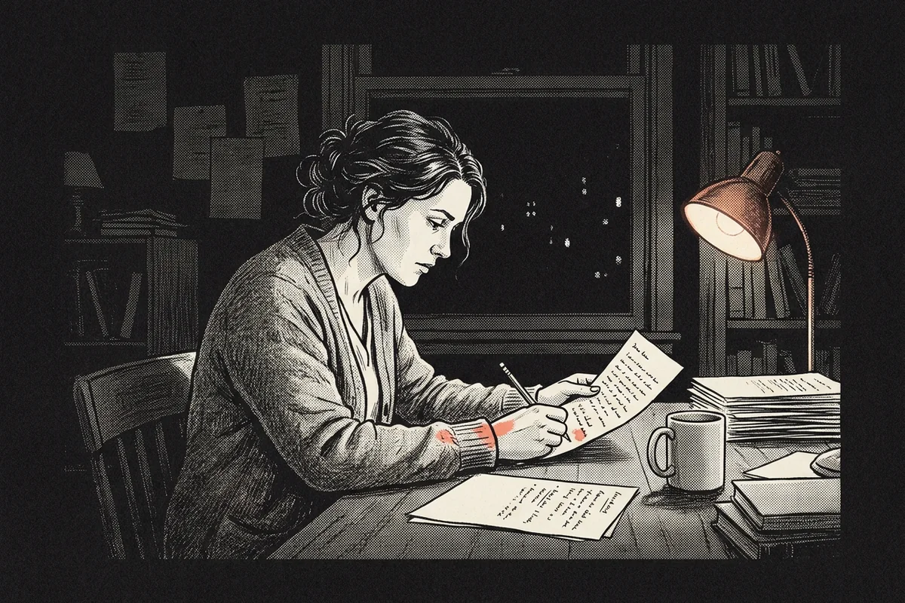
A novel in progress, aiming for publication in 2027. Fiction is optimization without a loss function.
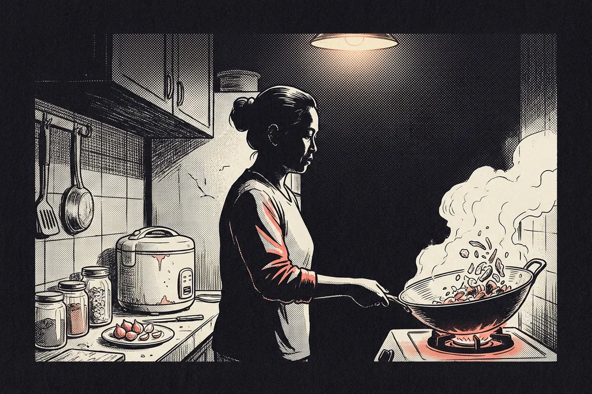
Indonesian kitchen. Recipes are reproducible; the good ones rarely are.
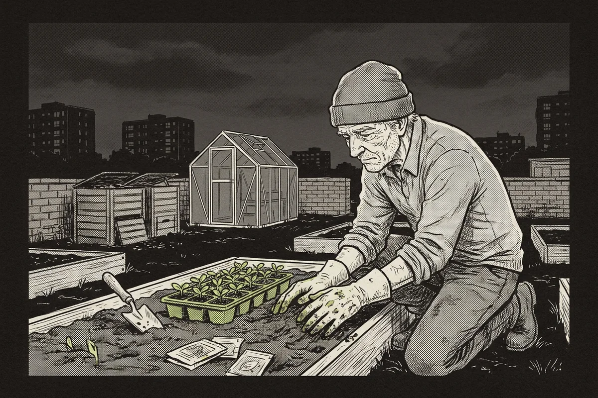
Neue Stadtgärtnerei Bonn: sustainable housing, urban agriculture and education in the city.
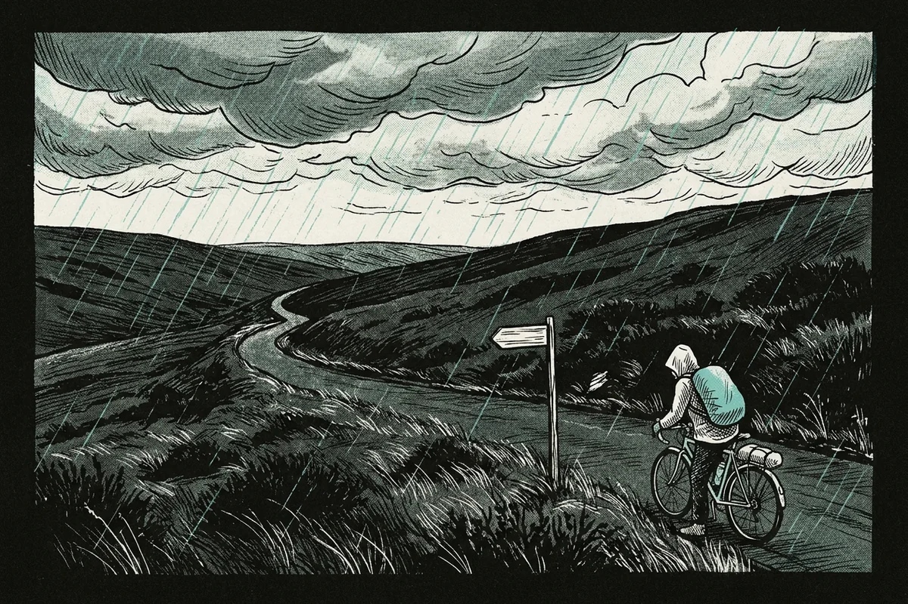
Hiking and cycling. Thinking at a walking pace, preferably with a hill in front of me.
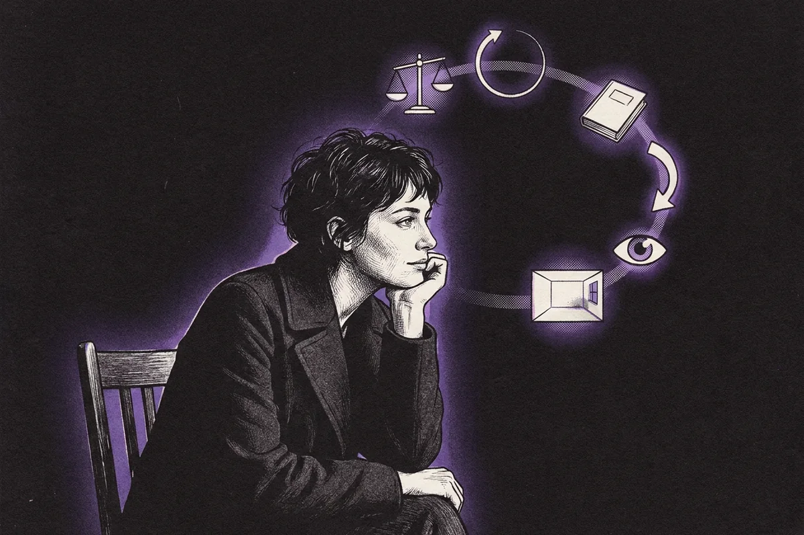
Philosophy of intelligence, geopolitics, European politics. Still trying to define the first one.